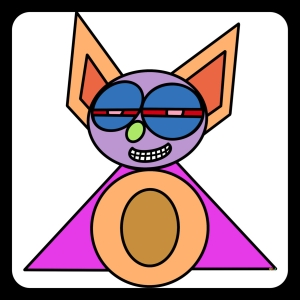
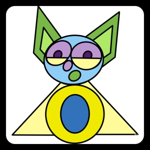
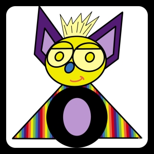
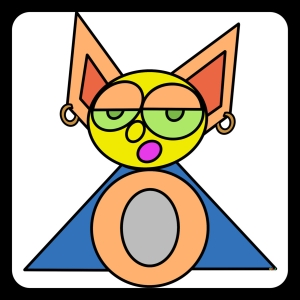

Meet the Dean Bats
Dean Bats are your new virtual NFT friends. Sometimes happy, at times mischievous, always colorful and definatly a Bat!
 Just like us, each Dean Bat is unique with over 12 billion unique possible color combinations.
Some Dean Bats have rare eyes and color combinations that will never be exactly the same. Some of the Dean Bats enjoy dressing up their wardrobe by adding hats, fancy hair, tummy tattoos and jewely for a little extra bling.
 Dean Bats have many friends and they enjoy hanging out together. If you watch closely you will see Dean Bat friends on Twitter and many other social media sites soon.